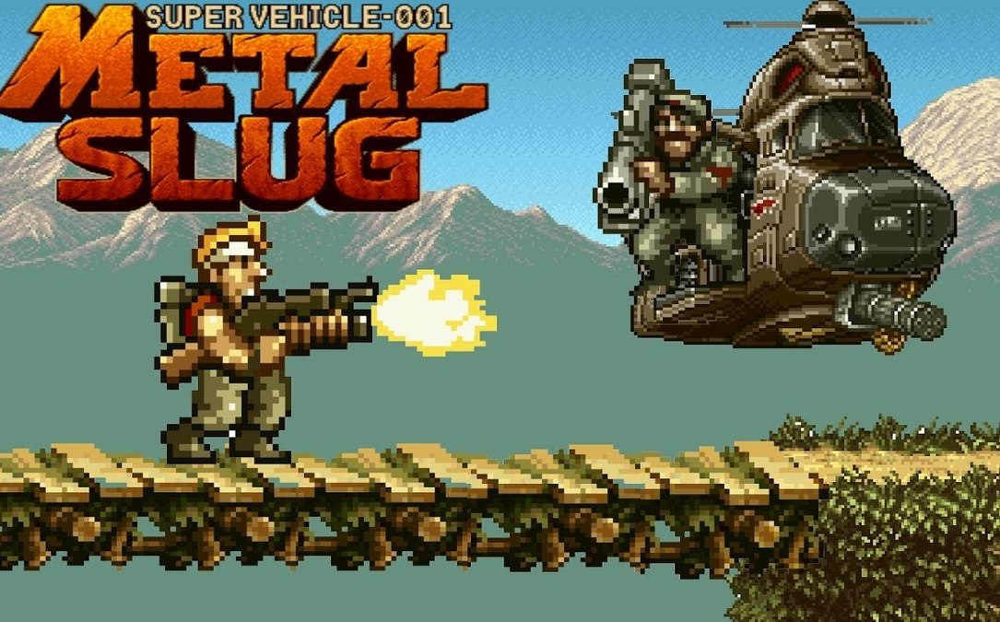

Somos una comunidad de fans apasionados por Metal Slug, una saga que no solo revolucionó los juegos arcade con su estilo de acción explosiva, sino que también dejó una huella imborrable en nuestros corazones. Desde el primer disparo hasta la última misión, crecimos disfrutando de sus niveles desafiantes, su pixel art detallado y ese inconfundible sentido del humor que lo hace tan especial.
Nuestra página nació como un homenaje a todo lo que representa Metal Slug: adrenalina, estrategia, camaradería y nostalgia. Aquí nos reunimos jugadores veteranos que recorrimos los salones recreativos en los 90 y también nuevas generaciones que han descubierto esta joya del run and gun.
Publicamos noticias sobre nuevos lanzamientos como Metal Slug Tactics, repasamos la historia de los juegos clásicos, compartimos curiosidades, secretos, fan art, mods, y también analizamos personajes, enemigos y armas icónicas como la Heavy Machine Gun, la Super Grenade o el querido tanque SV-001.
Pero más allá del contenido, queremos que esta sea una base de operaciones para todos los que aman esta franquicia. Un lugar donde puedas comentar, compartir, aprender y revivir aquellos momentos que te hicieron gritar “MISSION COMPLETE!” con una sonrisa.
Bienvenido a nuestra trinchera digital. Aquí la nostalgia nunca muere… y siempre hay un enemigo esperando ser derrotado.
